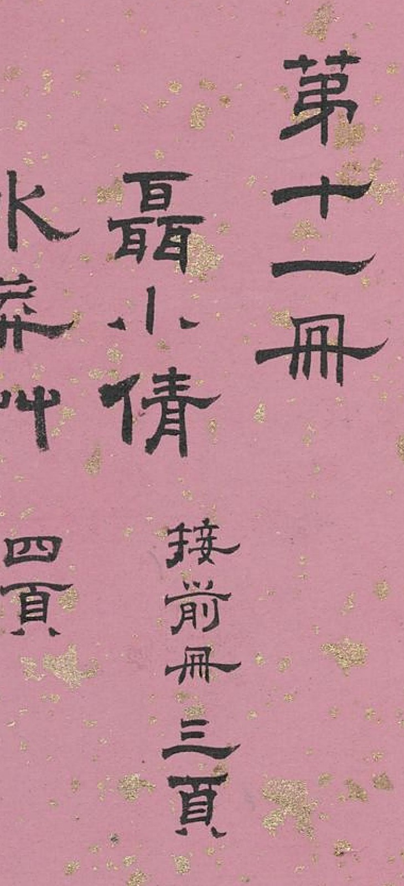
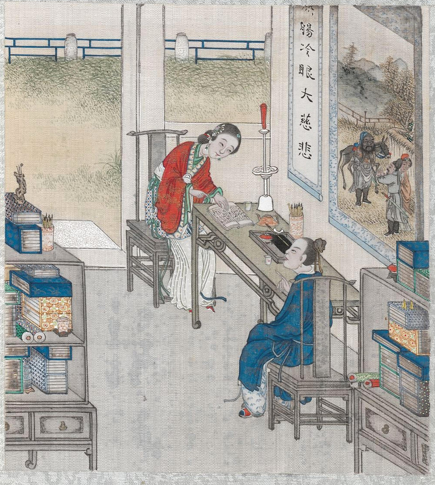
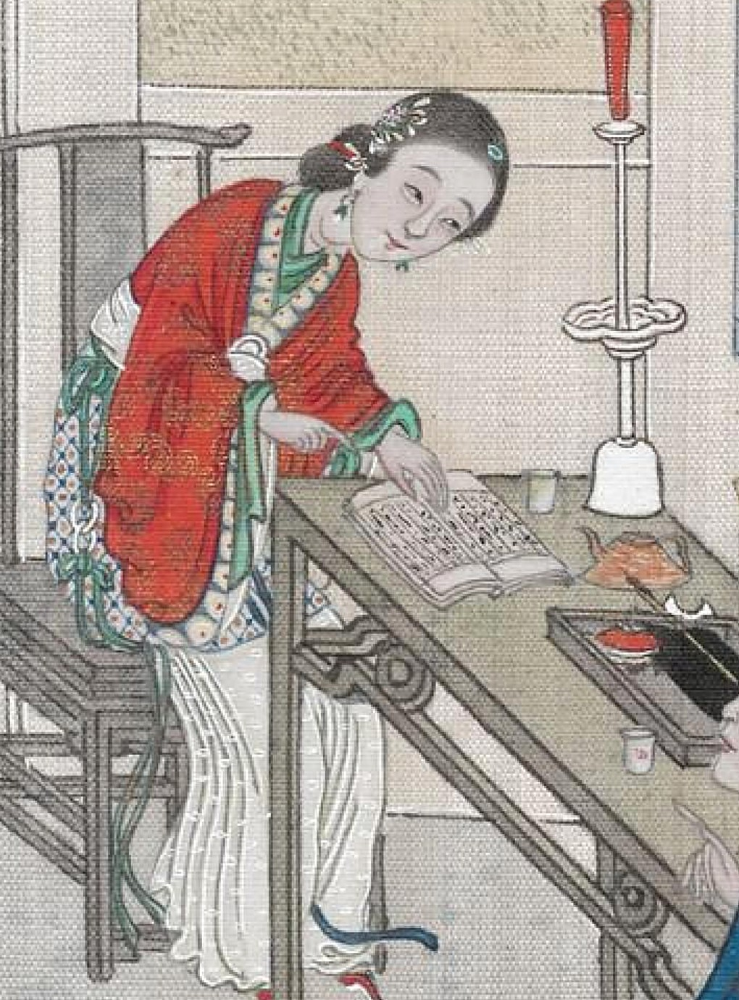
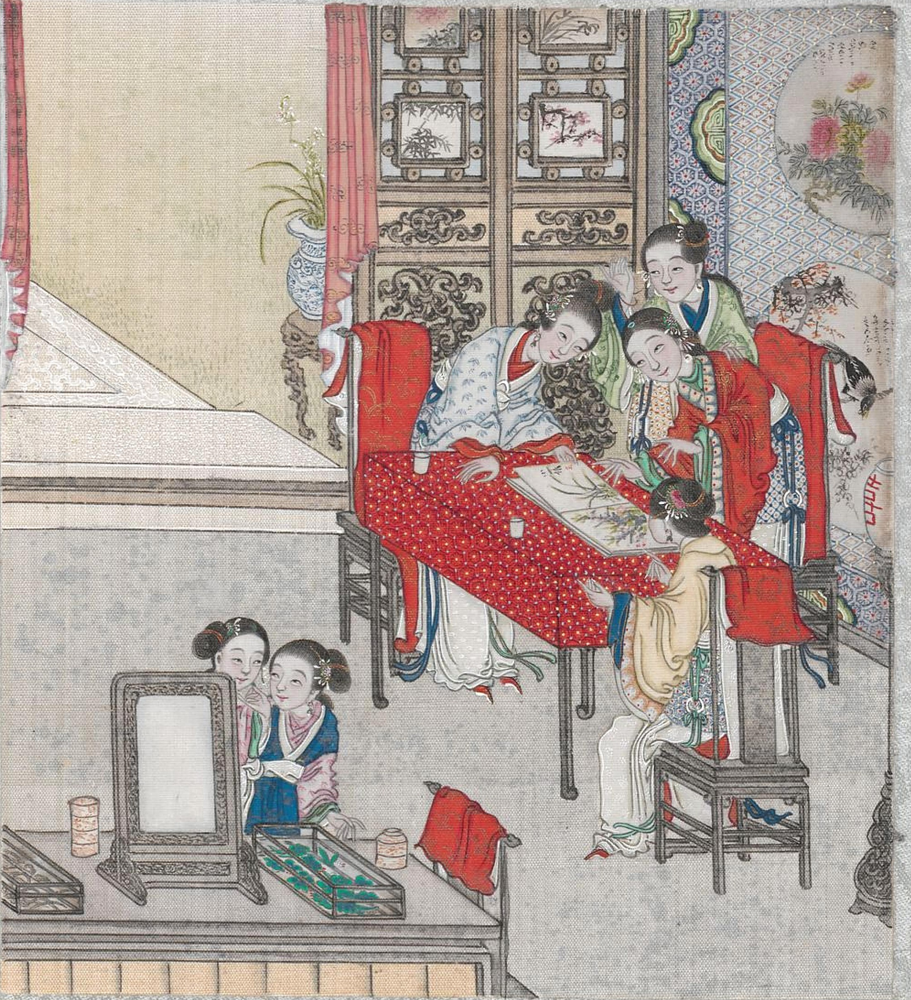
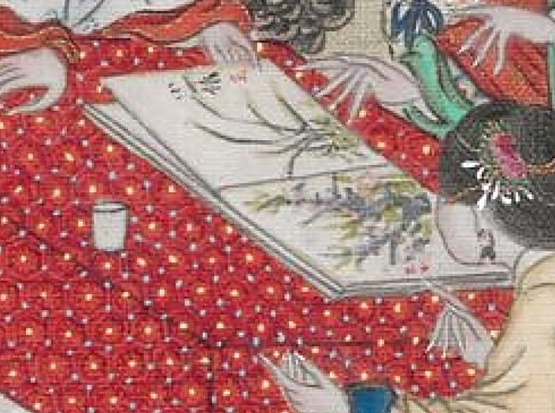
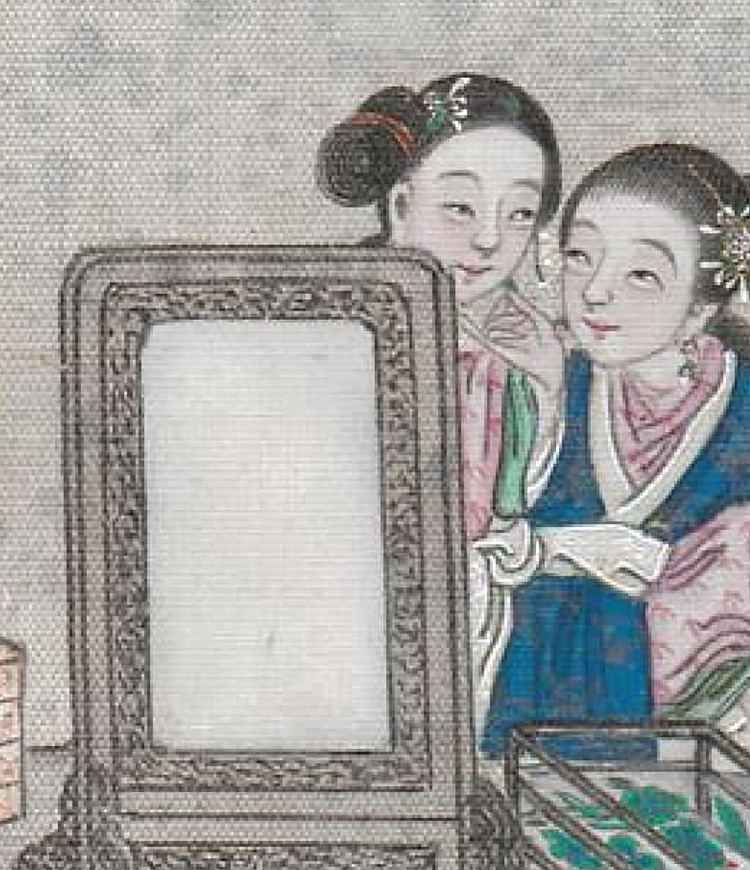
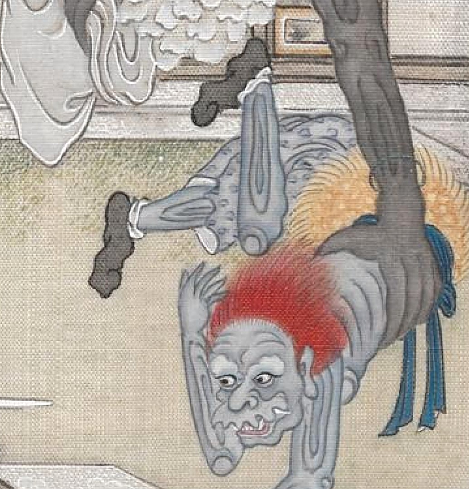
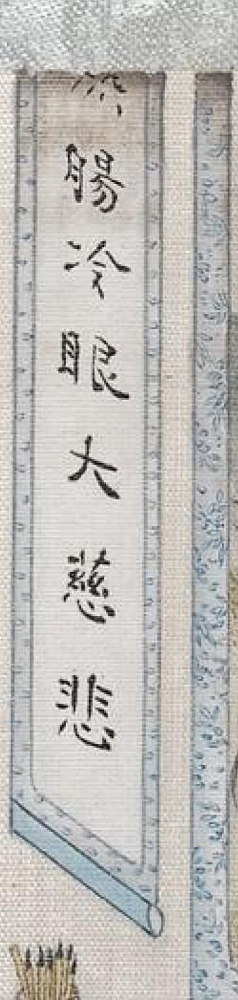

前情 · 接前册三页
故事的
开头丢了
第十一册目录页：「聂小倩，接前册三页」
《聊斋全图》原有九十册，共画 151 篇故事、276 开画面。1900 年前后被带往欧洲，散落世界各地。
今天知道下落的只有 23 册：维也纳 17 册、日内瓦 1 册，另有几册上过拍卖行。2018 年纽约苏富比拍出三册，成交价 7.5 万美元。
聂小倩一折从第十册画起，但第十册已经佚失了。我们能看到的，只有第十一册的结局三开：伴读、见客、夜袭。
聊斋全图 · 聂小倩

电影里，小倩投胎转世，故事就结束了。原著里没有投胎这回事：宁采臣把她的遗骨带回老家改葬，她以鬼身留下，却活得精彩远胜常人。小倩故事的后半场被清人画成连环画，但存世只剩三开。

前情 · 接前册三页
第十一册目录页：「聂小倩，接前册三页」
《聊斋全图》原有九十册，共画 151 篇故事、276 开画面。1900 年前后被带往欧洲，散落世界各地。
今天知道下落的只有 23 册：维也纳 17 册、日内瓦 1 册，另有几册上过拍卖行。2018 年纽约苏富比拍出三册，成交价 7.5 万美元。
聂小倩一折从第十册画起，但第十册已经佚失了。我们能看到的，只有第十一册的结局三开：伴读、见客、夜袭。
结局 · 第一开

小倩陪宁采臣夜读。墙上挂着钟馗出行图，对联是「热肠冷眼大慈悲」
回到宁家，小倩白天侍奉母亲，下堂劳作；夜里到书斋就烛诵经，等采臣要睡了才走。有趣的是，书房里住着鬼，供的却是捉鬼的神。
细节 · 放大镜

就烛诵经，觉宁将睡，始惨然去
初时，伴读至晚间，采臣催她走，不是无情：书斋没有第二张床，孤男寡女同处一室，于礼不合。她答：「异域孤魂，殊怯荒墓。」此后她早起请安，捧盆侍洗，下堂劳作，事事顺着母亲心意；母亲照顾病妻多年，撑持不住，有了小倩才松快下来，渐渐把她当亲生女儿疼。于是采臣母亲留她过夜，「亲爱如己出，竟忘其为鬼」，让小倩跟自己同卧起。
结局 · 第二开

女眷们围看的，是小倩画的兰梅
采臣前妻病故后，娶小倩做了新妇。亲族听说宁家的新媳妇，都来求见。她盛装出席，满堂看呆，「反不疑其鬼，疑为仙」。她善画兰梅，求画的络绎不绝，得画的「藏什袭以为荣」。
细节 · 放大镜


左：手卷上是小倩的兰梅。右：镜子前，丫鬟在梳妆
「五党诸内眷，咸执贽以贺，争拜识之。」亲戚家的女眷备礼上门道贺，小倩常会以画回赠。
结局 · 第三开
红发夜叉破窗而入，小倩躲进帘后
安稳日子没过多久，小倩连日心下怔忡：金华的夜叉怕是要寻来了。她当初怕革囊的剑气，采臣一直收在别处；如今沾染生气已久，不再怕了，让采臣取回来挂上床头。说那是剑仙装人头的袋子，「敝败至此，不知杀人几何」。破成这样，是斩妖无数磨出来的：剑气浸在革里，袋子早已成灵，想必能震慑金华妖物。
细节 · 放大镜

物如夜叉状，电目血口，睒闪攫拿而前
夜叉到了门口先却步，到底没忍住，伸爪去撕革囊。囊格然一响，撑得有竹筐大，恍惚有鬼物探出半身，把它揪了进去。夫妻俩凑近再看，囊中「清水数斗而已」。
采臣是浙江人，路经金华，夜宿城北兰若寺，才遇上小倩
妖物盘踞兰若寺，小倩葬在寺侧，被它胁迫；逃出金华，等于逃出它的地盘
为何化成清水，原书没有解释，只留下这一句
尾声 · 结局
后数年，宁果登进士。女举一男。纳妾后，又各生一男，皆仕进有声。
—— 《聊斋志异 · 聂小倩》篇末，画册抄文
蒲松龄收尾一向省墨，二十几个字，就把她的后半生交代完了，但是画册补上了这些留白。
用现代人的眼光看，这简直是古代人对「贤妻」的最高想象：既要上得厅堂艺惊四座，又要下得厨房服侍翁媪，还要允许纳妾多子多福。求诸现世不得，只能诉诸鬼神了。

题眼在这副对联：热肠待人，冷眼观世，大慈悲容物。采臣对色与金冷眼，对孤魂热肠，正是这个意思。再读一层：蒲松龄自己屡试不第，一辈子没中过举，到头来把进士和仕途，写给了故事里善待孤鬼的人。
后记 · Colophon
等它哪天从哪个街边旧物店里冒出来，我再回来补上开头。
附录
附录